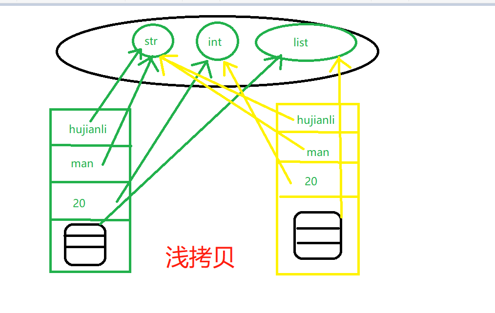
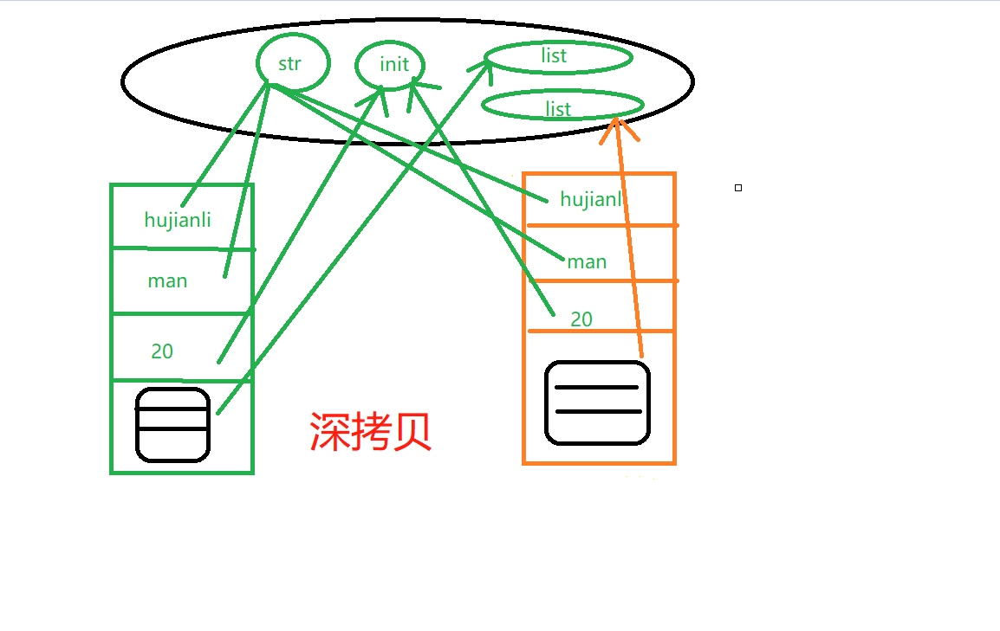

1.9. 深浅拷贝¶
1.9.1. 什么是可变类型和不可变类型¶
不可变数据类型¶
不可变类型:
int、float、str、tuple、bool
# int类型为不可变，重新定义之后，内存地址改变
Int_var = 10
print(Int_var, "-------->", id(Int_var)) # 10 --------> 1762591504
Int_var = 20
print(Int_var, "-------->", id(Int_var)) # 20 --------> 1762591824
print()
# float类型为不可变，重新定义之后，内存地址改变
float_var = 10.111
print(float_var, "-------->", id(float_var)) # 10.111 --------> 1701696015480
float_var = 20.111
print(float_var, "-------->", id(float_var)) # 20.111 --------> 1701696015408
print()
# str类型为不可变，重新定义之后，内存地址改变
Str_var = "hello hujianli"
print(Str_var, "-------->", id(Str_var)) # hello hujianli --------> 1701662799344
Str_var = "hello huxiaojian"
print(Str_var, "-------->", id(Str_var)) # hello huxiaojian --------> 1701712521376
print()
# tuple类型为不可变，重新定义之后，内存地址改变
tuple_var = (1, 2, 3)
print(tuple_var, "------>", id(tuple_var)) # (1, 2, 3) ------> 1701712521040
tuple_var = (1, 2, 3, 4, 5, 6)
print(tuple_var, "------>", id(tuple_var)) # (1, 2, 3, 4, 5, 6) ------> 1701712508296
print()
# bool类型为不可变，重新定义之后，内存地址改变
bool_var = True
print(bool_var, "------>", id(bool_var)) # True ------> 1762336944
bool_var = False
print(bool_var, "------>", id(bool_var)) # False ------> 1762336976
print()
1.9.2. 说明¶
浅拷贝：
在内存开辟新的地址空间，
对于可变对象，拷贝时，拷贝顶层引用，可变对象改变时，顶层引用不变。
对于不可变对象，拷贝时，拷贝地址引用一份，对象改变，浅拷贝对象也变，共享可变对象引用。
深拷贝：拷贝所有对象，顶级对象及其嵌套对象。或者说：父级对象及其子对象，
对于不可变对象，依旧指向引用内存空间。
对于可变对象，重新开辟内存地址，对象改变，互不影响。
"""
···深浅拷贝都是对源对象的复制，占用不同的内存空间
···如果源对象只有一级目录的话，源做任何改动，不影响深浅拷贝对象
···如果源对象不止一级目录的话，源做任何改动，都要影响浅拷贝，但不影响深拷贝
···序列对象的切片其实是浅拷贝，即只拷贝顶级的对象
"""

1.9.3. 浅拷贝¶
#!/usr/bin/env python
# -*- coding:utf8 -*-
# auther; 18793
# Date：2020/3/22 14:38
# filename: 数据的拷贝浅拷贝.py
import copy
print("-----------------浅拷贝-----------------------------")
print()
# 浅拷贝
name = ["hujianli", "man", 20, ["刘亦菲", "高圆圆", "关晓彤"]]
print("----------浅拷贝之前所有元素的id--------")
for n in name:
print("{}--->{}".format(n, id(n)))
# name1 = name.copy() ## 浅拷贝方式1，注意：只有可变对象才有.copy()方法。
# name1 = copy.copy(name) ## 浅拷贝方式2，内存开辟新的空间,
name1 = name[::] ## ## 浅拷贝方式2
print()
print("----------浅拷贝之后所有元素的id--------")
for n in name1:
print("{}--->{}".format(n, id(n)))
print()
print(name, "原始数据的内存-------->", id(name))
print(name1, "浅拷贝后的内存-------->", id(name1))
print()
# 修改可变对象,拷贝副本和原始数据共用可变对象。
name[3].append("鸭蛋")
print(name)
print(name1)
print()
# 修改不可变对象,原始数据的指向更改，拷贝数据指向不变。原始数据改变，拷贝副本不变
name[0] = "huxiaojian"
print(name)
print(name1)
print()
name[2] = 18
print(name, id(name))
print(name1, id(name1))
输出信息
-----------------浅拷贝-----------------------------
----------浅拷贝之前所有元素的id--------
hujianli--->1858928711152
man--->1858934290672
20--->1519846480
['刘亦菲', '高圆圆', '关晓彤']--->1858984001160
----------浅拷贝之后所有元素的id--------
hujianli--->1858928711152
man--->1858934290672
20--->1519846480
['刘亦菲', '高圆圆', '关晓彤']--->1858984001160
['hujianli', 'man', 20, ['刘亦菲', '高圆圆', '关晓彤']] 原始数据的内存--------> 1858984001224
['hujianli', 'man', 20, ['刘亦菲', '高圆圆', '关晓彤']] 浅拷贝后的内存--------> 1858934250312
['hujianli', 'man', 20, ['刘亦菲', '高圆圆', '关晓彤', '鸭蛋']]
['hujianli', 'man', 20, ['刘亦菲', '高圆圆', '关晓彤', '鸭蛋']]
['huxiaojian', 'man', 20, ['刘亦菲', '高圆圆', '关晓彤', '鸭蛋']]
['hujianli', 'man', 20, ['刘亦菲', '高圆圆', '关晓彤', '鸭蛋']]
['huxiaojian', 'man', 18, ['刘亦菲', '高圆圆', '关晓彤', '鸭蛋']] 1858984001224
['hujianli', 'man', 20, ['刘亦菲', '高圆圆', '关晓彤', '鸭蛋']] 1858934250312

1.9.4. 深拷贝¶
print("-----------------深拷贝-----------------------------")
names = ["hujianli", "man", 20, ["刘亦菲", "高圆圆", "关晓彤"]]
print("深拷贝前的内存地址：", id(names), "\n")
for name in names:
print(name, "------->", id(name))
name2 = copy.deepcopy(names)
print("深拷贝后的内存地址：", id(name2), '\n')
for name in name2:
print(name, "---->", id(name))
# 因为列表中的可变对象是新开辟的空间，所以进行修改不影响深拷贝的内容
names[3].pop()
names.reverse()
print(names) # [['刘亦菲', '高圆圆'], 20, 'man', 'hujianli']
print(name2) # ['hujianli', 'man', 20, ['刘亦菲', '高圆圆', '关晓彤']]
输出信息
-----------------深拷贝-----------------------------
深拷贝前的内存地址： 1770977537224
hujianli -------> 1770925725168
man -------> 1770927765688
20 -------> 1519846480
['刘亦菲', '高圆圆', '关晓彤'] -------> 1770977537288
深拷贝后的内存地址： 1770925725064 # 重新开辟内存空间
hujianli ----> 1770925725168 # 不可变对象，指向了内存空间中的引用
man ----> 1770927765688
20 ----> 1519846480
['刘亦菲', '高圆圆', '关晓彤'] ----> 1770977537992 # 对于可变对象新开辟了空间
[['刘亦菲', '高圆圆'], 20, 'man', 'hujianli']
['hujianli', 'man', 20, ['刘亦菲', '高圆圆', '关晓彤']]
举例说明：¶
"""
深浅拷贝都是对源对象的复制，占用不同的内存空间
如果源对象只有一级目录的话，源做任何改动，不影响深浅拷贝对象
如果源对象不止一级目录的话，源做任何改动，都要影响浅拷贝，但不影响深拷贝
序列对象的切片其实是浅拷贝，即只拷贝顶级的对象
"""
import copy
d = {'name':'hujianli','age':'22'}
c1 = copy.copy(d) #浅拷贝
c2 = copy.deepcopy(d) #深拷贝
print(id(d),id(c1),id(c2)) # 三个不同对象
d["name"] = "hujianli"
print(d,c1,c2) # 三个不同对象
#深拷贝
print("深拷贝".center(100,"="))
d1 = {'name':{'first':'hu','last':'jianli'},
'job':['IT','HR']}
c1 = copy.copy(d1)
c2 = copy.deepcopy(d1)
d1["job"][0] = "test"
print(d1)
print(c1)
print(c2)